双击说话
输入框就在它脚下，问完按 Enter。答案用气泡显示，长答案会自己变高，不用滚来滚去。
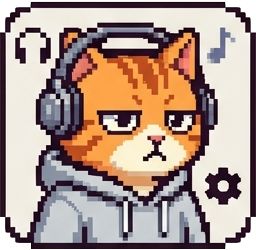
MEOCLAW GitHub双击它就能问话，文件拖过去它也能读。它会去问你配置好的 OpenClaw 或 Hermes，再把答案带回桌面。不用开浏览器，不用开终端。
v0.1.0，免费开源。macOS 11+ 和 Windows 10+。
点我聊两句。
也可以拖着我走。
待机、听你说、干活、回话。下面这些名字，就是它状态机里的真实状态。
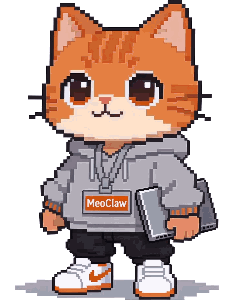
IDLE
待在屏幕角落，偶尔眨眨眼。不挡路，也不抢焦点。
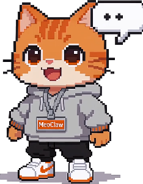
ENTER INPUT
双击弹出输入框，就在它脚下。按 Enter 发送，空着按 Enter 就收起。
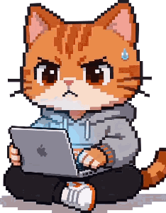
WORKING
抱着笔记本等后端。调工具的时候，会顶个气泡告诉你它在干什么。
RESPONSE
答案带回来了。气泡会自己撑高，回复再长也不截断。
四件事，都在桌面这一小块地方完成。
输入框就在它脚下，问完按 Enter。答案用气泡显示，长答案会自己变高，不用滚来滚去。
图片、PDF、代码、压缩包都认。文件类型会变成对应的小图标，再发给 AI。
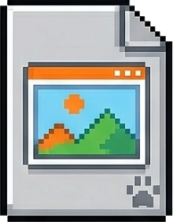
图片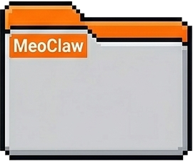
PDF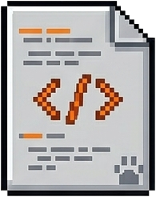
代码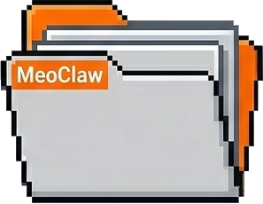
压缩包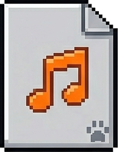
音频拖到屏幕边缘就自动吸附，只露半个身子。鼠标移过去，它再探出来。50% 到 200% 的大小都能调。
OpenClaw 走 WebSocket，Hermes 走 HTTP/SSE。右键菜单里切换，不用重启，也不用改配置。
还有：托盘图标、收到消息时的提示音、右键菜单里的重启和退出。
真实截图，没有加滤镜。
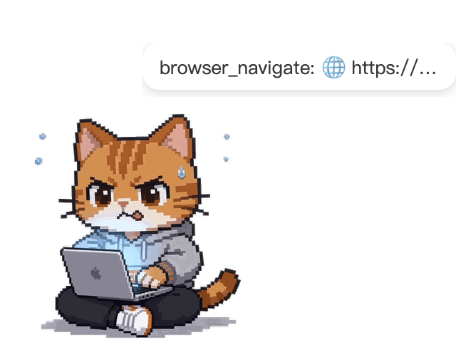
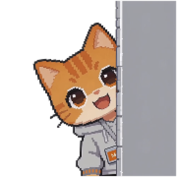
需要 Node.js 18+ 和 Rust 1.70+。Ubuntu 20.04 以上可以直接构建。
git clone https://github.com/OneLastHuman/MeoClaw.git
cd MeoClaw
npm install
npm run tauri build开发时用 npm run tauri dev，改前端会热更新。